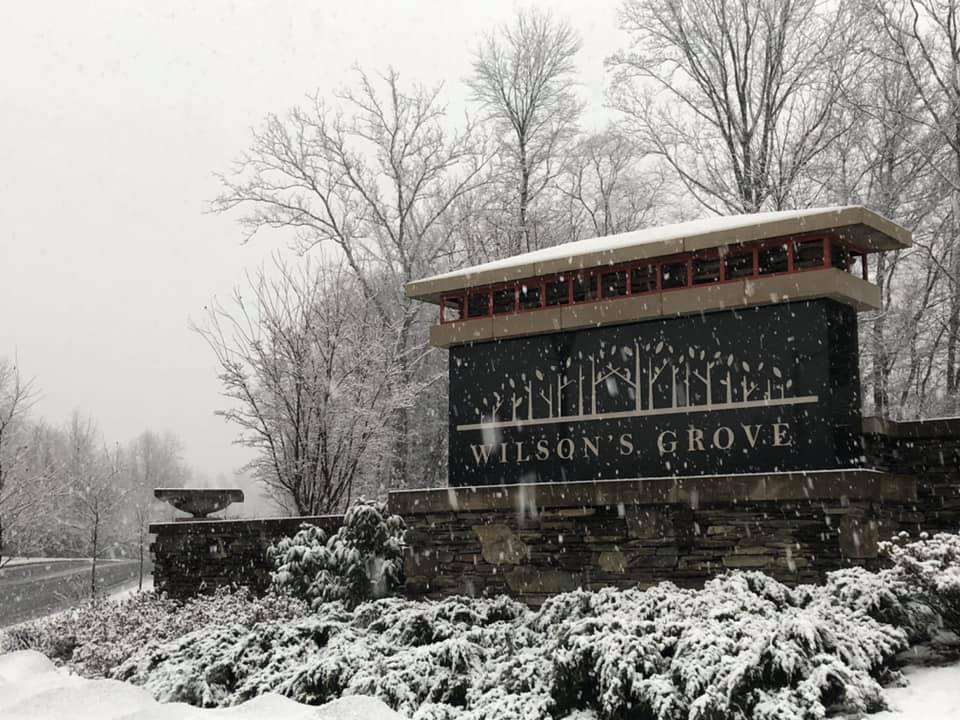

Frequently Asked Questions
Last update: October 3, 2026
66 answers about the HOA, amenities, fees, the pool, architecture changes, snow, violations and parking.

No questions match that search. Contact us and we will help.
General
What is a Homeowners Association?
The Maryland Homeowners Association Act defines a homeowners association (HOA) as a person or entity with the authority to enforce the provisions of a declaration. HOAs are corporations that are created to manage planned communities, and their main purpose is to protect home values and maintain common areas. They are governed by their own documents, which include rules and regulations that vary from association to association. Some key things to know about HOAs in Maryland include:
- Membership - Homeowners are automatically part of the HOA when they purchase a property in an HOA-controlled community.
- Assessments - HOAs collect regular assessments from homeowners to cover the cost of maintaining the neighborhood.
- Legal standards - HOAs and their boards of directors are subject to many of the same legal standards as corporate boards.
- Enforcement - HOAs can ask the circuit court to order homeowners to stop or fix violations, and the court can order homeowners to take action.
- Establishment - To establish an HOA in Maryland, Articles of Incorporation must be created and filed with the State Department.
Where can I find a copy of the MD HOA Act?
The Maryland Homeowners Association Act can be found on the MD General Assembly Website. Go to Laws → Statutes, select ‘Real Property’ under the ‘Articles’ dropdown and navigate to Section 11B. The Maryland Homeowners Association Act is section 11B-101 through 11B-118.
What is a Board of Directors?
In Maryland, a board of directors is a governing body for a homeowners association that is responsible for making decisions and determining policies for the association. The board of directors is responsible for the following:
- Ensuring that the association is run properly, including maintaining common areas, collecting fees, and ensuring that fees are fair.
- Ensuring that the community's governing documents are followed and enforced.
- Holding regular meetings to address association business, providing adequate notice to members.
- Managing the budget, including maintaining a reserve fund.
- Providing adequate insurance coverage.
- Managing elections.
The Wilson’s Grove Board of Directors is made up of elected volunteers from the community. Positions include president, vice president, secretary, and treasurer.
What are the governing documents for a HOA?
Some of the governing documents for a homeowners association (HOA) include (in hierarchical order):
- Plat - A recorded map that shows the location of the community and its structures, including units, lots, common areas, and limited common areas. The plat outlines the jurisdiction of the association. (Also known as a subdivision map).
- Declaration of Covenants, Conditions & Restrictions (CC&R) - Provides the HOA with the power to enforce certain rules of the association. It applies automatically to every owner who accepts a deed to a home in the community, and constitutes the contract between the homeowner and the association. The CC&Rs includes the association's covenant for assessments, which gives the association the right to charge dues to members.
- Articles of Incorporation - Establishes the HOA as a legal entity (non-profit organization) and defines its name, purpose, and corporate structure.
- Bylaws - Outlines the duties and responsibilities of the board, including meeting requirements, how many seats are on the board, election procedures, and members' voting rights.
- Rules & Regulations - Goes into more specifics compared to the CC&R. CC&R gives the HOA the right to enforce the rules and regulations and documents some of those rules and regulations. The R&R provides greater detail into what is being enforced. The HOA has the authority to create new rules and regulations (subject to federal and state laws). If the R&R conflicts with the CC&R, the CC&R takes precedence.
Where are the WG governing documents?
The Wilson's Grove homeowners association governing documents can be found in two locations:
- On the D.H. Bader Portal, navigate to Documents → Governing Documents to find the CC&Rs, Articles of Incorporation, and Bylaws.
- The Documents Library on this site.
What is an HOA Management company?
A homeowners association (HOA) management company is a professional service that manages the day-to-day operations of an HOA. They are hired by the HOA board to take on tasks that the board members can't or don't have time to do. Some tasks that a management company can assist with include:
- Ensuring the association is well-maintained and that common areas are in good condition.
- Contracting with vendors for lawn care, pool maintenance, electrical maintenance, etc.
- Managing and balancing bank accounts and ledgers, providing financial reports, and maintaining reserve accounts.
- Coordinating resident requests and sharing important information about the community.
- Processing fines and late fees, and sending notices to homeowners about them.
Who is WG's HOA management company?
The management company for the Wilson's Grove homeowners association is D.H. Bader. Their company website is https://www.dhbader.com/.
How do I contact the HOA?
The preferred avenue of communication with the Wilson's Grove (WG) homeowners association (HOA) board of directors (BoD) begins with contacting the HOA management company (D.H. Bader). This can be done via 2 avenues:
- Via the D.H. Bader Portal (preferred) - When you get to the portal, Navigate to Requests, select ‘General Request’, fill out the provided form and submit. The WG HOA BoD and DH Bader have access to view these requests.
- Direct to the D.H. Bader lead - If you have not received a response via the portal, you can contact Tom Van Pelt via email - tvanpelt@dhbader.com
If you have tried these avenues and have not received a response, you can contact the WG HOA BoD at wilsonsgroveboard@gmail.com. While this email address is monitored, the board will not respond to emails. Instead, the board will follow up with the management company and ensure your concern is addressed.
How do I become a member of the HOA Board?
The Board of Directors (BoD) will hold elections for new board members once per year in the spring for any vacant spots. To become a member, a resident may fill out an application and send it back to DH Bader when the call is put out in the spring. To be eligible, the resident must be in good standing (e.g. all dues, fines, and fees paid to date). The application will be mailed out in the spring when the call for new board members is sent to all homeowners. Directors serve three-year terms. Candidates can also be nominated from the floor at the annual meeting, and the candidates with the most votes are elected.
Are board meetings open to homeowners?
Yes. Board meetings are open to all homeowners. The Board may close part of a meeting only for limited reasons allowed by Maryland law, such as legal advice, personnel matters, contract negotiations, or an individual homeowner's account or violation hearing. The Board of Directors holds formal quarterly meetings and monthly working meetings. All meeting dates and times can be found on the Calendar and Events tab of the D.H. Bader Portal. They will also be posted to the Events Calendar on this site.
What do I need to do if I am selling my home?
If you are selling your home, please visit HomeWise Docs to order a resale package. A homeowners association (HOA) resale package is a collection of documents that provides information about Wilson's Grove and the HOA. This includes the governing documents, property information, financial information, etc.
What if I have a problem with a homeowner?
First and foremost, if police are required, please immediately reach out to the appropriate authorities. If that is not the case and if homeowners cannot resolve a situation between themselves, please reach out to the homeowners association (HOA) management company:
- Via the D.H. Bader Portal (preferred) - When you get to the portal, Navigate to Requests, select ‘General Request’, fill out the provided form and submit. The Wilson's Grove HOA Board of Directors and DH Bader have access to view these requests.
- Direct to the management lead - If you have not received a response via the portal, you can contact Tom Van Pelt via email - tvanpelt@dhbader.com
Another option is to reach out to the Anne Arundel County Conflict Resolution Team.
When is AACO trash collection for WG?
Wilson’s Grove trash collection occurs every Thursday morning. Please visit the AACO Curbside Collection Schedule for more details on county trash collection. Homeowners should place containers at their curbside after 6:00 pm the evening prior to trash collection. Containers must be returned to the garage by the end of the collection day. All trash must be stored in closed receptacles, and all trash containers must be stored out of view at all times.
Also, be sure to check the Holiday Collection Schedule for any changes due to the holidays.
Who owns the strip of grass between the sidewalk and the street?
The sidewalks and the strip of grass between a homeowner's property and the street in Wilson's Grove are owned by Anne Arundel County. The sidewalks and the strip of grass are part of the public right of way. AACO has a website that defines the right of way, to include the permitting process for changes to the right of way.
Who is responsible for repairing the sidewalks?
According to the AACO Bureau of Highways website (under the Department of Public Works), 'Maintenance and repair of existing sidewalks within the County rights-of-way is the responsibility of the Department of Public Works.' You can visit the website and submit a request for AACO to repair the sidewalk. According to the website, the County will respond to reports of vertical faulting or sidewalk deficiencies and will perform localized wedging or grinding. Total replacement of the sidewalk is dependent upon the severity of the problem and available funding.
Can I rent out my home?
Yes, with conditions. The lease must be for at least six months, and short-term or transient rentals are not allowed. Renting only part of a home needs prior written approval. Leases must be on a form approved by the Association, and owners must give the Association their current address. The owner is jointly responsible with the tenant for any injury or damage the tenant causes. See the CC&R, Section 7.4.
What vehicles can I keep at my home?
Outside of a garage, the following may not be kept on a lot or on the streets in the community: junk, unlicensed or inoperable vehicles; commercial vehicles, including vans used commercially and vehicles with commercial signage; trucks other than light pick-ups of 3/4 ton or less used for non-commercial purposes; and trailers, mobile homes, recreational vehicles and boats. Vehicle repairs are not allowed except in an emergency. See the CC&R, Section 7.3(d).
What are the rules for pets?
A reasonable number of dogs, cats, caged birds or other small domestic animals may be kept as pets, as long as they are not kept for commercial purposes and are not a nuisance to neighbors. Pets must be licensed and inoculated as required by law. In common areas a pet must be with a responsible person and carried or on a leash, and whoever brings the pet must clean up after it. See the CC&R, Section 7.3(b).
Can dirt bikes, ATVs or e-bikes be ridden in the community?
- Dirt bikes and ATVs: generally not allowed on public streets, sidewalks or Association common areas. Most cannot be registered for road use.
- E-bikes: a bike with working pedals and a motor of 750 watts or less (Class 1, 2 or 3) is generally treated as a bicycle and may be ridden where bicycles are allowed. Riders under 16 must generally wear a helmet.
- Electric dirt bikes (e-motos): a bike without working pedals, or over 750 watts, is generally not allowed on sidewalks, trails or Association common areas.
This is a summary for general information. See the MD Dirt Bike, ATV and E-Bike Law Summary, prepared by the Board with the HOA attorney, for details.
Amenities
What are the common amenities?
Amenities are available to all homeowners who are in good standing with the homeowners association, including the pool, gym, tennis courts, playground, clubhouse (for a fee) and walking trails.
How do I access the community amenities?
The tennis court, playground and walking paths are open and available to everyone. The pool and gym can be accessed via key fob during their operating hours. The clubhouse can be accessed via key fob and key after submitting and receiving approval to reserve the clubhouse.
Can I reserve any amenities?
Homeowners can only reserve the clubhouse. Homeowners cannot reserve the pool, gym, tennis courts, or the playground.
- The clubhouse reservation fee is $100 and is non-refundable. A maximum of 25 guests is allowed. Parties must end by 9:00 pm, with clean-up finished within one hour. The clubhouse can be reserved only by a full-time resident whose assessments are paid in full. Decorations may not be attached with nails, staples, tacks or adhesives, and the renter is responsible for any damage and for leaving the clubhouse clean. To reserve the clubhouse, go to the D.H. Bader Portal and navigate to Documents → Forms → Clubhouse Rental Form. Fill out the form and submit it to D.H. Bader (Requests → Submit a Request → General Request) along with the reservation fee. Payment can be made through the portal, or by check made out to Wilson's Grove HOA and mailed with the signed form to D.H. Bader Management, 10480 Little Patuxent Parkway, 10th Floor, Suite 1000, Columbia, MD 21044. The reservation will not be final until payment is received. The clubhouse rental provides access to the main floor only, not the lower floor, pool or gym. Also, reserving the clubhouse does not reserve the playground. You can also reserve the clubhouse by downloading the Clubhouse Rental Form and emailing your request to DH Bader (tvanpelt@dhbader.com) and the WG HOA Board (wilsonsgroveboard@gmail.com).
How do I request a new key fob?
Some amenities (gym and pool) require a key fob to access. Each home is entitled to 2 free key fobs at settlement. To request a new key fob, please send a request via the D.H. Bader Portal by navigating to Requests → Submit a Request → General Request. Each new key fob is $20. Payment can be made through the portal, or by check made out to Wilson's Grove HOA and mailed with the signed form to D.H. Bader Management, 10480 Little Patuxent Parkway, 10th Floor, Suite 1000, Columbia, MD 21044. Once payment is received, the Board will provide the resident with the requested number of key fobs. You can also download the Key Fob Request Form and email your request to DH Bader (tvanpelt@dhbader.com) and the WG HOA Board (wilsonsgroveboard@gmail.com).
Committees
What are the active WG committees?
There are currently 3 active committees in the community — the Pool Committee, Covenants Committee (aka the Architecture Review Committee), and the Events Committee.
Where are the committee governing docs?
The governing documents for the active committees can be found on the D.H. Bader Portal. When on the portal, navigate to Documents → Governing Documents → Committee Documents. They can also be found in the Documents Library on this site.
When do those committees typically meet?
All meeting dates and times can be found on the Calendar and Events tab of the D.H. Bader Portal. They will also be posted to the Events Calendar on this site.
How can I join a committee?
To volunteer for one of the committees, please send a request via the D.H. Bader Portal by navigating to Requests → Submit a Request → General Request.
How do I contact these committees?
The preferred method of contacting these committees is via the D.H. Bader Portal by navigating to Requests → Submit a Request → General Request. A secondary option is to email the DH Bader Management lead directly (Tom Van Pelt - tvanpelt@dhbader.com). If the committee has an email address, it will be posted to the committee page on this site as well. You can always email the WG HOA Board as well with any questions (wilsonsgroveboard@gmail.com).
Fees
What are the WG HOA monthly fees?
For calendar year 2026, the monthly homeowners association assessment is $172.
How do I manage my fee payments?
Viewing payment status and setting up auto-pay can be done on the D.H. Bader Portal. After logging in, navigate to the Payments section where you can see all recent activity. To establish auto-pay or to make a one-time payment, click on ‘Payment Center’.
What happens if I do not pay my assessment?
A late fee applies once a payment is more than 15 days late. The fee is $15 or one-tenth of the overdue amount, whichever is greater. If a payment is more than 30 days late, interest is charged from the original due date. See the CC&R, Section 5.9 and the Bylaws, Article 13 for full details. Homeowners are notified via email if a payment is missed. If attorney involvement is required, the homeowner shall be obligated to pay all attorney fees, court costs, and administrative costs. Homeowners cannot waive or escape liability via non-use of common areas and amenities.
What is covered by the monthly assessment?
Monthly assessments cover all community expenses, to include amenities upkeep (pool, gym, playground, basketball court, and tennis court), landscaping, management company fees, legal fees, community activities, utilities, and snow removal. Please refer to the current year budget for a comprehensive list of expenses. The budget can be found on the D.H. Bader Portal by navigating to Documents → Financials.
What is a special assessment?
A special assessment is a one-time charge on top of the regular assessment, used for things like capital improvements, unforeseen expenses or a budget shortfall. The Board cannot impose one on the community by itself: it must be approved by at least 67% of the members voting at a meeting called for that purpose. See the Declaration of Covenants, Conditions & Restrictions (CC&R), Section 5.4 for details. There are no special assessments as of the writing of this FAQ.
What is the Front Foot Fee (deferred water and sewer charge)?
It is a separate annual charge that repays the cost of building the community's water and sewer lines. It is not an HOA fee and is not part of your county water bill.
- Amount: $837 per year for each home, for 30 years from when the home was first sold or occupied.
- Due: January 1 each year.
- Paid to: S&W Utility Co (www.swutilityco.com), not the HOA or D.H. Bader.
- Late payments: interest and late fees apply after 15 days, and the charge is secured by a lien on the home.
- Paying it off early: allowed at any time if your account is current.
- Selling your home: the charge stays with the home and passes to the buyer, and it must be disclosed in the sale.
Full details are in the Deferred Water and Sewer declaration, also listed in the Documents Library.
Pool
How do I register to become a pool member?
Payment of monthly HOA assessments makes a homeowner eligible to access the pool facilities. To gain access, please visit Cell Badge and register your family. The pool committee and lifeguard company use cell badge to verify membership upon arrival, track total guests, post pool operating status, etc.
What are the pool hours?
The pool hours for 2026 are:
- Mon / Tues: 12:00pm - 8:00pm
- Wed / Thurs: 10:00am - 8:00pm
- Fri: 12:00pm - 9:00pm
- Sat: 11:00am - 9:00pm
- Sun: 11:00am - 8:00pm
Exceptions include:
- All Holidays: 11:00am - 8:00pm
- Weekdays from 5/23 - 6/16: pool hours 5pm - 8pm
- Weekdays from 8/24 - 9/7: pool hours 5pm - 8pm
More pool information can be found on the D.H. Bader Portal by navigating to Documents → Pool Information, and on the Pool Committee page on this site.
Where can I find the pool operating status?
Please visit Cell Badge for up-to-date status on pool operations.
Can I reserve the pool for a private event?
No, the pool cannot be reserved for a private event.
What are the pool rules?
A quick summary of the pool rules can be found here. The full set of pool rules will be maintained on the D.H. Bader Portal by navigating to Documents → Governing Documents → Committee Documents → Pool Information. Updated rules will also be added to the Documents Library.
What is the guest policy?
The limit on guests is four (4) guests per household per visit. There is no overall yearly limit on the number of guests, and there is no charge for guest passes. Guests must be accompanied by an adult resident at all times.
Architecture Modifications
What is the Covenants Committee?
In general, a Covenants Committee for an Association is created in order to ensure the community is maintained in a manner that provides for visual harmony and soundness of repairs, avoids activities deleterious to the aesthetic or property values of the community, and promotes the general welfare and safety of the Owners. In layman's terms, this committee reviews and approves all architectural modifications to homes.
Is an ARC application required?
Please refer to the Wilson's Grove Design Guidelines to determine if your proposed project requires ARC approval.
What is the ARC process?
Please refer to the Wilson's Grove Design Guidelines for the full process. A general process is below:
The Covenants Committee (aka the ARC) has 60 days from the date of receipt of a completed application to review and provide approval decision. A completed application includes:
- A completed ARC Modification Form
- All relevant supporting documentation:
- Lot Plat with setback information and sketch of the proposed improvement
- Construction Plan
- Photographs of area to be improved
- Sketches or Photos of proposed improvement
- Material Samples
- Proposed Colors
- Landscape Plan
- Lighting
- Contractor Plan
The form also asks for the signatures of adjacent neighbors. Their signature shows they are aware of the project; it is not approval or disapproval.
Where can I find the ARC form?
The ARC Modification Form can be found on the D.H. Bader Portal by navigating to Documents → Governing Documents → Committee Documents → ACC Information. It is also available in the Documents Library.
What is the ARC application fee?
As of the passing of the ARC Guidelines Resolution in June 2025, there are no fees associated with ARC applications!
When can I expect a response from the ARC?
The Covenants Committee is required to provide notification to homeowners of the approval or disapproval of any proposed improvement within sixty (60) days after receipt of the completed application. Please note that the 60 day time frame begins once the application is complete, meaning all required documents have been provided. If the Covenants Committee does not respond within sixty (60) days of the receipt of a completed application, the Application will be deemed to have been disapproved.
Where can I find my ARC request status?
The status of a submitted ARC request can be found on the D.H. Bader Portal by navigating to the request section and clicking on 'My Items'.
Statuses are now being posted on this website as well! Navigate to the ARC Committee Page to see your status (note: you will need to know the XN Number from the D.H. Bader Portal)
How long is an ARC approval valid?
Work must begin within 6 months of the approval date and be completed within 12 months. After that the approval lapses and a new application is needed.
What can I do if my ARC application is denied?
You have 10 days from the decision to either ask the Covenants Committee to reconsider (it must reply within 30 days) or appeal to the Board of Directors. The Board will hold a hearing if you request one and must respond in writing within 45 days. Reversing a decision takes a two-thirds vote of the Board.
Snow & Grass
Who is responsible to remove snow from my sidewalk?
AACO passed Bill No. 76-25 on December 1, 2025 that went into effect on January 19, 2026, modifying Article 9, Section 1-710 of the Anne Arundel County Code for removal of snow and ice from sidewalks. More information can be found on the AACO Snow / ICE Removal Page. In summary, homeowners are required to clear their sidewalks within 24 hrs after a snow event for less than 3 inches of snow, and within 48 hrs after a snow event for greater than 3 inches of snow. Complaints for non-compliance can be reported by calling 3-1-1 or by reporting online through SeeClickFix.
What is the HOA responsible for in regards to snow removal?
The WG HOA has a snow removal contract that ensures all common area sidewalks are shoveled and the clubhouse parking lot is plowed. The 2026 contract requires shoveling and plowing services for snow events of greater than 2 inches. Salt treatments and pretreatments are available upon request.
Who is responsible for plowing the streets?
All streets throughout Wilson's Grove are managed by AACO. Therefore, AACO is responsible for plowing all community streets. AACO has a website with more information on who plows each county street.
Where can I find county snow removal info?
Visit the AACO Snow Service page for more info on snow removal during snow events. It includes information on who plows streets, a map with snow removal updates for all roads in the county, and a site that provides house-specific level of snow removal service.
What snow removal level of service is WG?
According to the AACO snow removal level of service page, Wilson's Grove is a tier 3 (residential road). This means:
- 0-6in: Roads should be made passable up to 36 hours after the end of the storm
- 6-14in: Roads should be made passable 2-3 days after the end of the storm
- 14-22in: Roads should be made passable 3-4 days after the end of the storm
- 22in or more: Roads should be made passable 4-6 days after the end of the storm
Who is responsible for cutting the strip of grass next to the street?
WG Homeowners are responsible to cut the strip of grass between the road and the sidewalk.
Budget
Where can I find the current budget?
The current budget can be found on the D.H. Bader Portal by navigating to Documents → Financials.
When is the budget voted on?
The yearly budget is voted upon and approved at the last quarterly meeting of the year, which is typically held in November.
Violations
What is the violation process?
The general process that the WG HOA follows for violations is below. The full procedure and the Schedule of Fines are in the Policy on Imposition of Fines.
- Warning letter. You receive a written notice describing the violation and what is needed to fix it. For an ongoing violation you have 15 to 30 days to fix it, depending on the type and severity.
- Hearing notice. If the violation is not fixed, or happens again within a year, the Board sends a notice of a hearing at least 10 days ahead, stating the proposed fine.
- Hearing. The Board holds the hearing in closed session. You may attend, present evidence and bring witnesses. No fine is imposed before the hearing.
- Fine. If the Board finds the violation occurred, a fine is imposed from the Schedule of Fines: $50 to $250 depending on the violation.
- If it continues. You have 30 days to pay and fix the violation, or the fine doubles. After another 30 days the matter goes to the HOA's attorneys, and the owner pays the legal fees.
The Board may reduce or waive a fine case by case. For architectural violations, you can apply for approval after the fact; if granted, the fine is cancelled.
Where can I go to see if a violation is on my account?
All homeowners can go to the D.H. Bader Portal, to check the status of any violations.
Parking
Why is the Board establishing a contract with a towing company?
To tow abandoned and non-WG vehicles left in the clubhouse parking lot.
Why do we need a towing contract?
In AACO, non consensual towing (e.g. towing without the vehicle owner's consent) requires a towing company to have formal authorization from the lot owner and visible signage on the lot for at least 24 hours prior to towing.
Who can park in the clubhouse parking lot?
Residents and guests may park in the clubhouse parking lot for up to 24 consecutive hours. No notice to the Board is needed.
What if I need to park longer than 24 hours?
Email the Board at wilsonsgroveboard@gmail.com and get written permission before the 24 hours are up. The Board considers each request case by case and intends to approve requests such as family visiting, driveway work or yard work.
What cannot be parked in the clubhouse parking lot?
- Commercial vehicles, including vehicles with commercial advertising
- Trucks over 3/4 ton
- RVs, motorhomes, campers, trailers and boats
- ATVs and other off-road vehicles
- Vehicles that are unregistered, without current plates, or not in operating condition
Vehicle repairs, storage pods and parking on the grass are also not allowed.
Can my vehicle be towed?
Yes. A vehicle that breaks the parking rules may be towed at the owner's expense. No vehicle is towed without written authorization from the Board or the property manager. The tow location is posted on the signs in the parking lot.
Where are the full parking rules?
The complete rules are in the Parking Rules and Regulations resolution, also listed in the Documents Library.